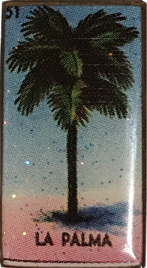

This website was created for Journalism Design Toolkit - Spring 2020 with Professor Jason Das.
Explore my assignments from this semester as I learn to design my observations of climate change in my local environment.
I hope to impart my appreciation for marine life by sharing tools and sites to observe and appreciate nature.
Stay tuned for regular scene reports along the PCH featuring water quality guides, marine observation sites, and beach culture.
